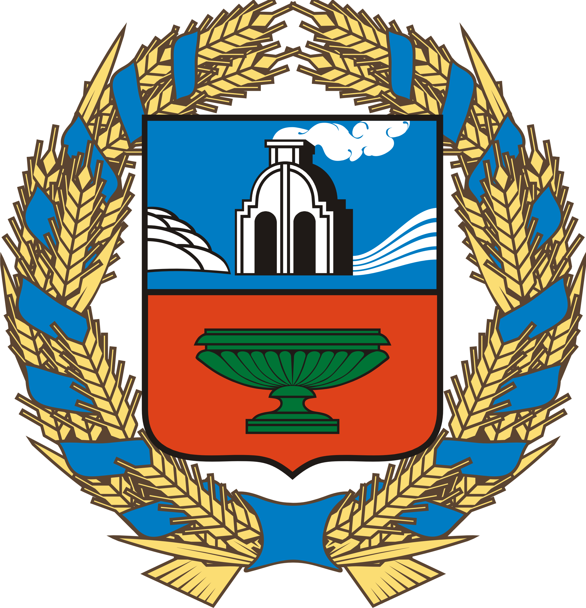

Алтайский край: культура алтайского края
Культура
На главную
Алтайский край – регион с богатым историко-культурным и природным наследием. Это родина многих выдающихся личностей: Василия Шукшина, Михаила Калашникова, Германа Титова, Ивана Пырьева, Роберта Рождественского, Валерия Золотухина и многих других.
В настоящее время в Алтайском крае сосредоточена многопрофильная сеть учреждений культуры, в том числе: 1 тыс. 051 учреждение клубного типа, 969 общедоступных библиотек, 73 музея, 7 театров, 6 концертных организаций, 3 профессиональных образовательных организации с двумя филиалами, 89 детских школ искусств, 5 парков культуры и отдыха, Алтайский краевой учебно-методический центр по художественному образованию, Государственный архив Алтайского края.
По состоянию на 1 января 2020 года сеть краевых государственных учреждений в сфере культуры, искусства, среднего профессионального образования, а также архивного дела насчитывает 21 учреждение с 6 филиалами, в том числе одно учреждение по работе с социально незащищенными слоями населения – КГКУ «Алтайская краевая специальная библиотека для незрячих и слабовидящих». Также в крае успешно работает федеральное высшее учебное заведение в сфере культуры и искусства – Алтайский государственный институт культуры.
В настоящее время в Алтайском крае сосредоточена многопрофильная сеть учреждений культуры, в том числе: 1 тыс. 051 учреждение клубного типа, 969 общедоступных библиотек, 73 музея, 7 театров, 6 концертных организаций, 3 профессиональных образовательных организации с двумя филиалами, 89 детских школ искусств, 5 парков культуры и отдыха, Алтайский краевой учебно-методический центр по художественному образованию, Государственный архив Алтайского края.
По состоянию на 1 января 2020 года сеть краевых государственных учреждений в сфере культуры, искусства, среднего профессионального образования, а также архивного дела насчитывает 21 учреждение с 6 филиалами, в том числе одно учреждение по работе с социально незащищенными слоями населения – КГКУ «Алтайская краевая специальная библиотека для незрячих и слабовидящих». Также в крае успешно работает федеральное высшее учебное заведение в сфере культуры и искусства – Алтайский государственный институт культуры.